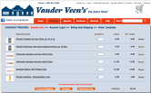
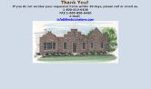
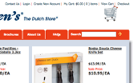
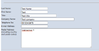
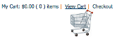
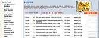
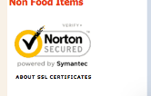
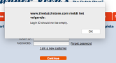
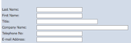

Project nummer 2 title
Project nummer 2 subtitle
Tag
Dit was een opdracht voor het vak Patterns of Interaction waarbij ik de opdracht kreeg om middels een test de usability van de website The Dutch Store te peilen. Na het testen heb ik deze bevindingen gebruikt om een verbeterd herontwerp van de website te maken.
The Dutch Store is een website waarop Nederlandse producten worden verkocht in Amerika.
Het doel van deze heuristic evaluation is het zoeken naar mogelijke verbeterpunten. De bevindingen zullen worden gebruikt om een herontwerp te maken van de website met als doel de doelgroep een betere ervaring te bieden.
Om de verbeterpunten te achterhalen is gekozen om een heuristic evaluation uit te voeren, omdat dit een techniek is waarbij op verschillende aspecten van een ontwerp wordt getoetst en hierdoor een algemeen beeld wordt gevormd van mogelijke verbeterpunten. De website is geëvalueerd aan de hand van de 10 heuristics van Jakob Nielsen.
| Usability Heuristic | Bevinding | Screenshot |
|---|---|---|
| Zichtbaarheid van systeemstatus | 10 producten in winkelmandje, maar bovenaan pagina wordt getoond dat er slechts 6 items in winkelmandje zitten. |  |
| Match tussen systeem en werkelijkheid | In zoekoptie zou placeholder tekst moeten staan. Bijvoorbeeld: ‘Vul hier uw zoekterm in’. | |
| Gebruikscontrole en vrijheid | Na versturen van bericht via contactformulier is er geen mogelijkheid verzonden bericht ongedaan te maken. |  |
| Consistentie en normen | Login niet rechtsboven van de website. Plaats login naast winkelmandje. |  |
| Foutpreventie | Geen directe feedback bij openlaten van een essentieel invoerveld. Dit gebeurt pas na poging tot versturen. |  |
| Herkenning in plaats van herinneren | Checkout functie is geen call-to-action button. Zou prominenter moeten zijn en dus toegankelijker. |  |
| Flexibiliteit en efficiëntie van gebruik | Geen mogelijkheid om producten te filteren op bijvoorbeeld prijs. |  |
| Esthetisch en minimalistisch design | Logo van Norton op website is overbodig en leidt dus af van andere elementen. |  |
| Gebruikers helpen bij het herkennen, diagnosticeren en herstellen van fouten | Systeem geeft feedback dat inloggegevens verkeerd zijn, zou goed zijn als de feedback aangeeft wat er anders moet. Bijvoorbeeld: invoerveld is hoofdlettergevoelig. |  |
| Hulp en documentatie | In invoervelden gebruikmaken van placeholder tekst. Voorbeeld placeholder tekst e-mailadres: voorbeeld@email.com. |  |
- Bevorderen duidelijk- en overzichtelijkheid van navigatie;
- Meer onderscheid maken door grootte en kleur, voornamelijk in titels en navigatie;
- Betere basisstructuur. Dit door een grid pattern, om zo de indeling van de content duidelijker te maken.
De heuristic evaluation van The Dutch Store heeft meerdere bevindingen opgeleverd. In het winkelmandje moet aantal per product aangepast kunnen worden. In de zoekfunctie zou het een positieve toevoeging zijn wanneer er placeholder tekst in staat en zoeken in gang kan worden gezet door middel van enter functie en niet slechts middels de muisknop. Bij het versturen van een bericht via de website zou er een mogelijkheid moeten zijn, na korte tijd, het bericht verzenden ongedaan te maken. Log in functie zou rechtsboven in de moeten pagina komen, dit is de plek waar gebruikers de functie verwachten door het mentaal model. Verplichte onderdelen bij invullen van (bestel-) formulier zodat essentiële onderdelen van de informatie niet leeg worden verstuurd. De check-out button moet prominenter worden, want dit is uiteindelijk de kern waar de website op draait: producten verkopen. Een filter om producten per categorie te kunnen bekijken toevoegen. Overige/irrelevante content van website wissen, zoals logo van Norton anti-virus, want dit heeft geen toegevoegde waarde en leidt af van het doel van de website. Het systeem moet specifieke feedback geven wanneer een e-mailadres en/of wachtwoord niet goed wordt ingevuld. Ook een limiet aan de kwantiteit producten die besteld kunnen worden kan mistanden voorkomen. In de invoervelden van formulieren moet waar nodig gebruik worden gemaakt van placeholder tekst. Bestelling moet gewijzigd kunnen worden. De formulieren moeten controleren of er aan de regels voldaan wordt, bijvoorbeeld: bij een zip code een aantal cijfers en letters worden ingevuld en niet onbedoelde tekens. Er moet een duidelijke shopping cart zijn. Gebruikmaken van duidelijke omschrijvingen van functies bij buttons en dergelijke. Op de website zou het logo moeten werken als navigatie link naar de homepagina van de website.
PS dit is een schoolopdracht en is niet gerealiseerd.